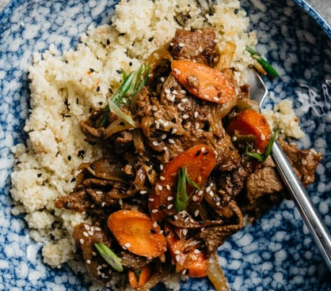

Bulgogi
Korean inspired, family favorite dish.

Ingredients
- 1 lb beef sirloin, thinly sliced
- 6 tablespoon coconut aminos
- 1/2 medium pear (preferably korean pear), diced into chunks
- 2 teaspoon sesame oil
- 1 inch knob fresh ginger
- 3 cloves garlic, peeled
- 2 tablespoon apple cider vinegar
- 1/2 teaspoon sea or kosher salt
- 1/2 teaspoon cracked black pepper
- 1 medium onion, sliced
- 2 green onions, sliced into 1″ pieces
- 1 large carrot, shaved and thinly sliced
- 1 tablespoon olive oil
- 1 tablespoon sesame seeds, for garnish
Instructions
- Place the beef in the freezer for 30 minutes. Remove from the freezer and slice thinly against the grain, 1⁄8 inch thick.
- Place the coconut aminos, pear, sesame oil, ginger, garlic, apple cider vinegar, sea salt and black pepper in a blender. Blend well until liquified and smooth.
- Combine the sliced beef and the marinade in a large bowl. Massage the beef and marinade with your hands until the beef slices are covered in the marinade.
- Cover and marinate in the refrigerator for 1 hour, or up to overnight.
- Remove it from the marinade, shaking off the excess drippings. Add the sliced onions, carrots, and green onions to the meat and toss to combine.
- Heat the olive oil over high heat in a 10″ cast iron skillet.
- Working in batches so you don’t overcrowd the pan, add the beef and vegetables and stir-fry until the meat is browned and cooked through.
Chef's Notes
Fantastic homemade bulgogi. Mama would be proud. See original recipe here.